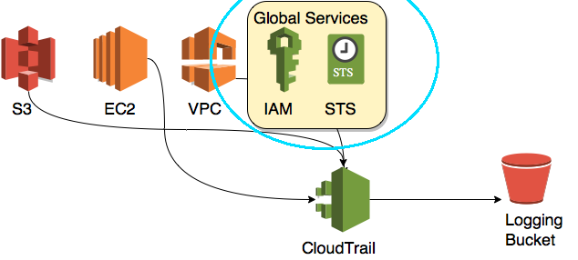

By: Andrew Krug @andrewkrug
Part 2
In our last post we looked at basic defense against a “stop logging” attack which we can all agree is a best case scenario. Stop logging attacks are not sophisticated or difficult to detect or mitigate. What if the attack was slightly more sophisticated? A patient and thoughtful attacker is much more difficult to detect inside of a large complex environment.
In the same post we mentioned in the last article titled : “Disrupting AWS Logging” https://danielgrzelak.com/disrupting-aws-logging-a42e437d6594#.2m18u72vu by Daniel Grzelak a method of disabling only global logging is mentioned. To understand that let’s define global logging.
Global Logging

Global logging can be defined as CloudTrail events for the services that aren’t region specific within Amazon Web Services like Security Token Service or IAM Console access.
In terms of importance I would rank global logging a high value target when deciding what to disable first. If you find a way to quietly disable global logging you can then perform all kinds of privilege escalation while all of the monitoring systems continue to receive regular CloudTrail events for non-global operations. This might even be sufficient to fool anomaly detection systems.
We can use CloudWatch events in a similar way to defend against this type of attack. Instead of only triggering CloudWatch events on the “StopTrail” event we will also configure CloudWatch to fire the same Lambda function on “UpdateTrail” as disabling global logging is an “Update” operation.
You might have noticed a snippet of code as well in the Lambda function we provided in our Github repository for the series. https://github.com/ThreatResponse/defense-against-the-dark-arts/tree/master/part-1/cloudwatch-restore-cloudtrail
#NOTE: THE ENTIRE LAMBDA THIS IS ABBREVIATED
#DON'T JUST TRY TO USE THIS
#First in the object constructor we pull in all of the TrailARN attributes.
self.status = self.client.get_trail_status(
Name=trailArn
)
#Parse the trail dictionary to check to see if Global Service Events are included.
def globalEventsActive(self):
if self.status[IncludeGlobalServiceEvents] == True:
return True
else:
return False
#If they aren't included then we "updateTrail" to include the new attribute.
def globalLogging(self):
response = self.client.update_trail(
Name=self.arn,
IncludeGlobalServiceEvents=True
)
So if you followed along in Part 1 of the series all you needed to do was update your CloudWatch event to run our “return to known good state” lambda function on UpdateTrail API Calls.
As a hacker one of my person favorite hacks is the type that occurs when a technology that is designed to improve security is used as an offensive mechanism. Maybe it’s because I love clever people. Hackers are clever people. Therefore I love hackers.
This attack pattern uses encryption against the victim in an unexpected way. Once again if you’d like to learn to execute this attack Daniel’s blog is well worth a read on the topic at hand. https://danielgrzelak.com/disrupting-aws-logging-a42e437d6594#.2m18u72vu
Effectively this can be summarized as an attack that keeps CloudTrail active but breaks the very foundation of it’s ability to operate within AWS. So StopTrail is never actually run against the API. UpdateTrail is run however. So all of the aforementioned detection mechanisms apply.
Look for the next blog post where we’ll look at: